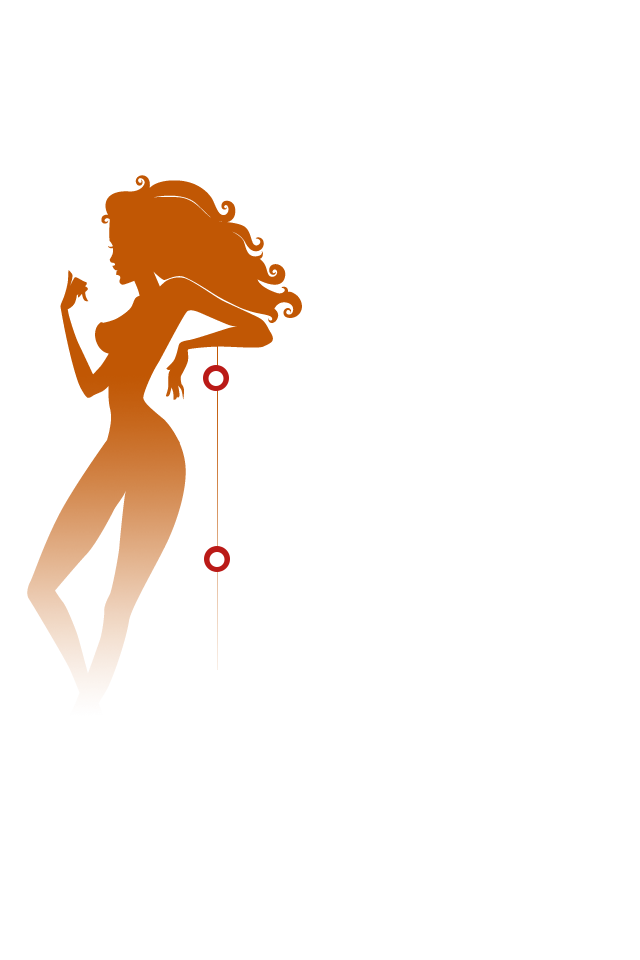

<!DOCTYPE html>
<html lang="ch"	manifest="/appcache/act/3575?_t=1404809753">
<head>
	<title></title>
	<meta charset="utf-8" />
	<meta HTTP-EQUIV="pragma" CONTENT="no-cache">
	<meta HTTP-EQUIV="Cache-Control" CONTENT="no-cache, must-revalidate">
	<meta HTTP-EQUIV="expires" CONTENT="0">
	<meta name="keywords" content="" />
	<meta name="description" content="" />
	<meta name="apple-touch-fullscreen" content="yes" />
	<meta name="format-detection" content="telephone=no" />
	<meta name="apple-mobile-web-app-capable" content="yes" />
	<meta name="apple-mobile-web-app-status-bar-style" content="black" />
	<meta http-equiv="Expires" content="-1" />
	<meta http-equiv="pragram" content="no-cache" />
	<title></title>
	<script src=js/app/offline.js?1397525361></script>	<!--移动端兼容适配 -->
	<script type="text/javascript">
	if(/Android (\d+\.\d+)/.test(navigator.userAgent)){
		var version = parseFloat(RegExp.$1);
		if(version>2.3){
			var phoneScale = parseInt(window.screen.width)/640;
			document.write('<meta name="viewport" content="width=640, minimum-scale = '+ phoneScale +', maximum-scale = '+ phoneScale +', target-densitydpi=device-dpi">');
		}else{
			document.write('<meta name="viewport" content="width=640, target-densitydpi=device-dpi">');
		}
	}else{
		document.write('<meta name="viewport" content="width=640, user-scalable=no, target-densitydpi=device-dpi">');
	}
	//微信去掉下方刷新栏
	if(navigator.userAgent.indexOf('MicroMessenger') >= 0){
		document.addEventListener('WeixinJSBridgeReady', function() {
			//WeixinJSBridge.call('hideToolbar');
		});
	}
	</script>
	<!--移动端兼容适配 end -->
	<link rel="stylesheet" type="text/css" href="template/22/assets/styles/reset.css?v=1.5"/>
	<link rel="stylesheet" type="text/css" href="template/22/assets/styles/app.css?v=1.5"/>
	<link rel="stylesheet" type="text/css" href="template/22/assets/styles/animation.css?v=1.5"/>
	<link rel="stylesheet" type="text/css" href="template/22/assets/styles/units.css?v=1.5"/>
	<link rel="stylesheet" type="text/css" href="template/22/assets/styles/modules.css?v=1.5"/>
	<link rel="stylesheet" type="text/css" href="template/22/assets/styles/page.css?v=1.5"/>
    <link rel="stylesheet" type="text/css"  href="css/style.css"/>
</head>

<body class="app" data-app-id="3575">
	<!--app loading-->
	<div id="app-loading" class="app-loading">
		<div class="cycleWrap">
			<span class="cycle cycle-1"></span>
			<span class="cycle cycle-2"></span>
			<span class="cycle cycle-3"></span>
			<span class="cycle cycle-4"></span>
		</div>
		<div class="lineWrap">
			<span class="line line-1"></span>
			<span class="line line-2"></span>
			<span class="line line-3"></span>
		</div>
	</div>
	<!--app loading end-->
	
	<footer class="app-footer">
		
	</footer>
	<!--app footer end-->
<!--	<input type="hidden" value="/template/22/data/images/logo/logo.jpg" data-share-pic>-->
	<!-- script -->
	<script type="text/javascript" src="template/22/assets/scripts/seajs/sea.js"></script>
	<script type="text/javascript">
		var assetsVersion = '1.6';
		seajs.config({
			map: [
				[ /^(.*\.(?:css|js))(.*)$/i, '$1?v='+ assetsVersion]
			]
		});
		seajs.use('page/main');
	</script>
	<!-- script end-->
</body>
</html><!--app header-->
	<header class="app-header">
			<a href="javascript:void(0);" class="u-globalAudio">
				<i class="icon-music"></i>
				<audio src="userfiles/53a39ef466277.mp3" autoplay="autoplay" loop></audio>
			</a>
	</header>
	<!--app header end-->

	<!--app content-->
	<section class="app-content">
	
		
		<!--启动页page-->
		<section class="page page-index z-current" data-plugin-type="info_front">
			<section class="page-content">
				<!--动画背景图-->
								<!--自然风景-->
				<div class="m-animationBox m-meteorShower"></div>
								<!--前景图-->
				
           <!--    <div class="shake"></div>-->
			</section>
		</section>
		<!--启动页page end-->

		<!--图文介绍page-->
        
        <section class="page page-teletext changebg" data-plugin-type="info_list" style="background:url(img/1.jpg) top center no-repeat;" ></section>
        
		<section class="page page-teletext" data-plugin-type="info_list" style=" background:url(img/case/bg.jpg) no-repeat;">
        
			<section class="page-content">
				<ul class="m-cascadingTeletext">
					<li>
						
						<div class="imgText">阳光整形达人：甜甜</div>
					</li>
					<li>
						
						<div class="imgText">阳光美眼达人:Yellow</div>
					</li>
					<li>
						
						<div class="imgText">阳光整形达人：晓九</div>
					</li>
					<li>
						
						<div class="imgText">阳光美眼达人:Yellow</div>
					</li>
					<li>
						
						<div class="imgText">阳光整形达人：米娜</div>
					</li>
                    <li>
						
						<div class="imgText">阳光美鼻达人：李丽</div>
					</li>
					<li>
						
						<div class="imgText">阳光美胸达人：谭丽萍</div>
					</li>
					<li>
						
						<div class="imgText">阳光整形达人：然然</div>
					</li>
                    
				</ul>
				<a href="javascript:void(0);" class="u-guidePrev z-move">prev</a>
				<a href="javascript:void(0);" class="u-guideNext z-move">next</a>
			</section>
		</section>
		<!--图文介绍page end-->
         <section class="page page-teletext" data-plugin-type="info_list" style="background:url(img/2.jpg) top center no-repeat;"></section>
         
         <section class="page page-teletext swing" data-plugin-type="info_list" style="background:url(img/3.jpg) center center no-repeat; position:relative"></section>   
         
         <section class="page page-teletext changebg1" data-plugin-type="info_list" style="background:url(img/03.jpg) top center no-repeat"></section> 
       
		 <section class="page page-teletext big" data-plugin-type="info_list" style="background:url(img/4_bg.jpg) top center no-repeat; position:relative"></section> 
         
		
		<!--图文链接page-->
<!--		<section class="page page-link" data-plugin-type="info_link" style="background-image: url(userfiles/53a3ccb1426f2.jpg);">
			<section class="page-content">-->
								<!--链接组件-->
<!--				<div class="m-link">-->
								<!--文本链接-->
<!--                         <a href="" style="display:block; width:342px; height:185px; position:absolute; top:50%; left:50%; margin:-556px 0 0 -166px;"></a>					
				</div>-->
<!--				<div class="f-hide">
					<div class="u-maskLayer m-weixinShareLayer z-hide"> 
						
					</div>
				</div>-->
			</section>
		</section>
		<!--图文链接page end-->
		</section>
	<!--app content end-->
	<!--app footer-->
	